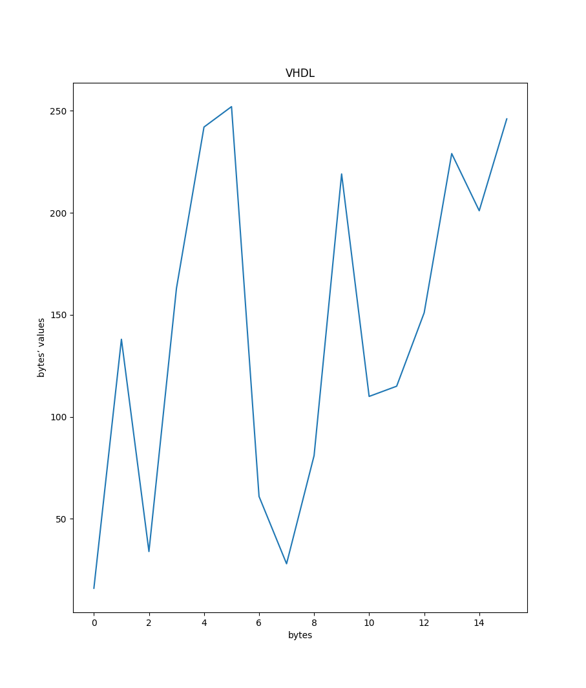
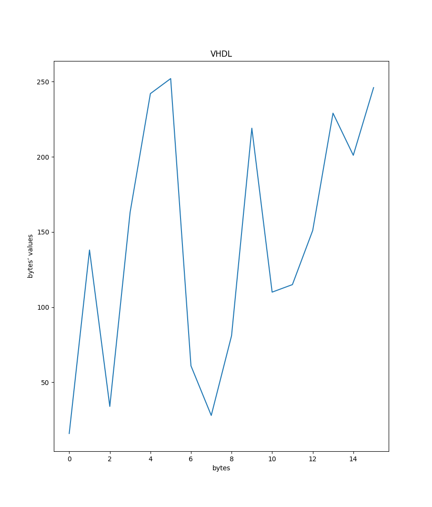Systemy wbudowane, Laboratorium
Ostatnio okazało się, że VHDL pozwala na tworzenie układów komponentów przez łączenie ich sygnałami za pomocą instrukcji
port maporazgeneric map. Były to na razie proste układy logiczne. W odróżnieniu od nich układy sekwencyjne są to układy pamiętające — ich wyjście zależy od aktualnego stanu. Najprostszym przykładem są liczniki – następne wyjście zależy od poprzednich wejść (a więc stanu licznika). Pojęcie procesu już się pojawiło przelotnie, teraz pora na bliższą znajomość. Proces jest zestawem instrukcji wykonywanych sekwencyjnie (tj. w kolejności ich zapisania w procesie). Jednakże sam proces jest wykonywany współbieżnie z innymi instrukcjami współbieżnymi (np. przypisanie podstawowe (a <= "010"), warunkowe:y <= a when s = ’0’ else b when s = ’1’ else ’X’;(nb. – jakie działanie opisuje ten kod?).
Powyższy kod opisuje przypisanie wartości do zmiennej y warunkowo, na podstawie wartości zmiennej s.
Inną instrukcją współbieżną jest przypisanie selektywne:
with s select y <= a when "00" b when "01" c when "10" "XXX" when others;Ponawiam pytanie: co opisuje ten kod?
Tak jak wcześniej, przypisujemy wartość do zmiennej y na podstawie wartości zmiennej s.
Tak czy inaczej, są to instrukcje, które występują bezpośrednio w ciele opisu architektury i są wykonywane równolegle. Wszystkie. Razem z procesami. A wracając do procesów, te są wykonywane linia po linii. To trochę zagmatwane, ale proces jest po prostu bardziej złożoną pojedynczą instrukcją — umożliwia podejmowanie decyzji, wykonywanie operacji itd. Z procesem powiązana jest jego lista czułości — zestaw sygnałów podanych w nawiasie zaraz za jego nazwą. Jeśli którykolwiek z tych sygnałów zmieni swój stan — powoduje to uruchomienie procesu. To nie jest lista argumentów funkcji, chociaż na to wygląda. Jeśli proces nie ma listy czułości, to by znaczyło, że będzie działał zawsze i w kółko. Tak być nie może, więc VHDL nakazuje, by wewnątrz takiego procesu została użyta instrukcja
wait [for|until].
Przed uruchomieniem któregokolwiek z programów należy wykonać polecenie
make buildcelem kompilacji wszystkich programów.
Następnie można wykonać polecenia:
make r=‹PROGRAM›żeby po prostu uruchomić dany program, lub
make wave r=‹PROGRAM›żeby pokazać wynik danego programu w programie GTKWave.
Wartość PROGRAM jest jednym z:
lfsr,lfsr_tb,simple,simple_tb,twoway,twoway_tb.Oprócz VHDL w zadaniu 3. program napisany w C można skompilować przy pomocy polecenia
make lfsr-c.oa następnie uruchomić przy pomocy
./main.o ‹liczba bajtów›Przeanalizuj kod dla
simple.vhd, odpowiedz na zadane w komentarzu pytanie.
Wycinek z pliku simple.vhd:
-- you can add like this:
q <= q + 1;
-- or like this
-- q <= q + "00000001";
-- but can't do it this way (why?)
-- q <= q + '1';Opcja z dodaniem '1' nie może zadziałać, bo mamy niezgodność typów, której nie da się rozwiązać. Otóż q jest liczbą całkowitą bez znaku, kiedy '1' jest bitem — bez określenia pozycji (wieku) tego bitu.
W przypadku "00000001" nie ma tego problemu, bo bit ma określoną pozycję, dodajemy liczbę, która po prostu jest zapisana w postaci binarnej.
Uruchom
simple_tb.vhdi zmodyfikuj czasy zadania sygnałurst, aby licznik doliczył do 195, a potem do 182.
W postaci pierwotnej pliku simple_tb proces zajmujący się zegarem clk działał bez końca. W celu rozwiązania tego problemu dodałem sygnał stopp, który przez większość działania programu ustawiony jest na '0'. Ustawiamy go na '1' dopiero na koniec drugiego procesu, kiedy liczba qq osiąga żądane wartości.
Żeby liczba qq doliczyła do żądanej wartości, musimy wysłać odpowiednią liczbę sygnałów do programu simple. Program ten oczekuje na przejścia zegara clk. W testbench-u określony jest okres zegara clk. Program simple zaczyna (resetuje liczbę q) od wartości 160 (0xA0).
Żądanymi wartościami są:
195 (0xC3),182 (0xB6).Zatem, musimy wysłać liczbę sygnałów równą różnicy między 160 a żądanymi wartościami. (Oczywiście resetujemy q do początkowej wartości przed liczeniem do drugiej żądanej wartości.)
Żeby wysłać zadaną liczbę sygnałów, mnożymy wspomnianą różnicę przez okres zegara.
Wycinek programu simple_tb po zmianach:
stim_proc: PROCESS
BEGIN
-- let it run
wait for 50 ns;
-- apply reset
rst <= '1';
wait for 700 ns;
-- and let it go
rst <= '0';
wait for 50 ns;
-- apply reset
rst <= '1';
wait for 440 ns;
-- and let it go
rst <= '0';
-- stop
stopp <= '1';
wait;
END PROCESS;Wynik programu GTKWave:
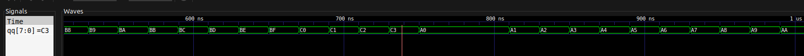
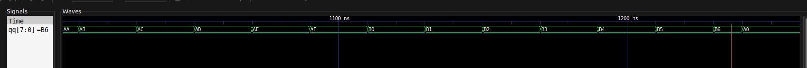
Jak widać na powyższych obrazkach, dochodzimy do żądanych wartości, a następnie sygnał qq jest resetowany do początkowej wartości.
Zapoznaj się z realizacją układu zawartego w
twoway.vhd. Postaw tezę na temat działania tego licznika, napisz test (możesz wykorzystać ten z zad. 1.). Czy wszystko działa, jak powinno? Jeśli nie, to popraw.
Teza: licznik liczy od zera do maksymalnej liczby mieszącej się w 8 bitach. Przed przekroczeniem zakresu licznik zmienia kierunek (dir — direction). Kiedy licznik dociera do zera, kierunek jest zmieniany ponownie.
Potrzebne poprawki:
Deklaracja zmiennej dir — początkowa wartość powinna wynosić '1', nie '0'. Zaczynamy od zera, więc chcemy dodawać, nie odejmować.
VARIABLE dir: STD_LOGIC := '1';Warunek zmiany kierunku przy dojściu do wartości maksymalnej. Poniższy IF sprawdza, czy x jest równy największej możliwej wartości. W pierwotnej wersji programu kierunek dir był zmieniany za późno, już po przekroczeniu wartości maksymalnej.
IF x >= 2 ** NBit - 1 THEN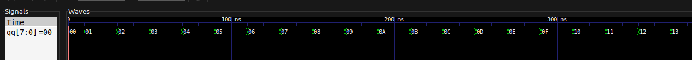
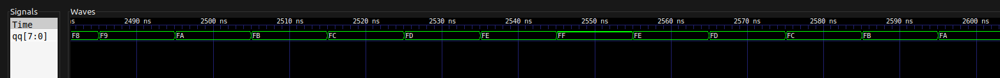
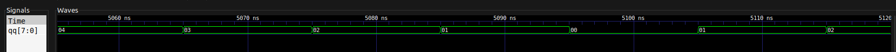
Jak widać na powyższych obrazkach, licznik (po odpowiednich poprawkach) działa poprawnie. Zmienia kierunek, jeśli dochodzi do któregoś z momentów krytycznych.
Testbench do programu twoway znajduje się w pliku twoway_tb.vhd
W pliku
lfsr.vhdznajdziesz prostą implementację rejestru LFSR (Linear Feedback Shift Register).
- Napisz program testowy, pozwalający na wydobycie z LFSR sekwencji bajtów pseudolosowych.
- Użyj programu z http://lfsr-generator.sourceforge.net/, aby wygenerować rejestr LFSR i porównać go do swojego modelu w VHDL (możesz zmodyfikować kod w lfsr.vhd)
Porównaj wyniki z obu programów. Narysuj wykres generowanych bajtów w czasie dla różnych wartości początkowych.
Najbliższym implementacji z pliku lfsr.vhd programem generowanym przez lfsr-generator jest:
lfsr-generator --length=16 --shift-amounts=1 --taps=16,15,14,5 --shift-leftJedyną różnicą jest bramka NOT w lfsr.vhd przy generowaniu następnego bitu. W programie wygenerowanym przez lfsr-generator bramka ta jest nieobecna.
Jeżeli usuniemy bramkę NOT z lfsr.vhd otrzymamy te same wyniki.
Dla przykładu dla wartości początkowej równej 2:
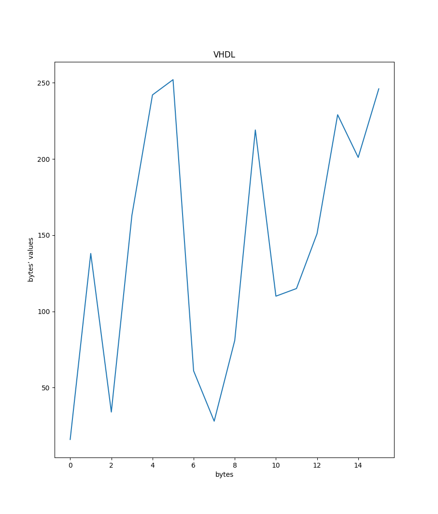
Oraz dla 10:
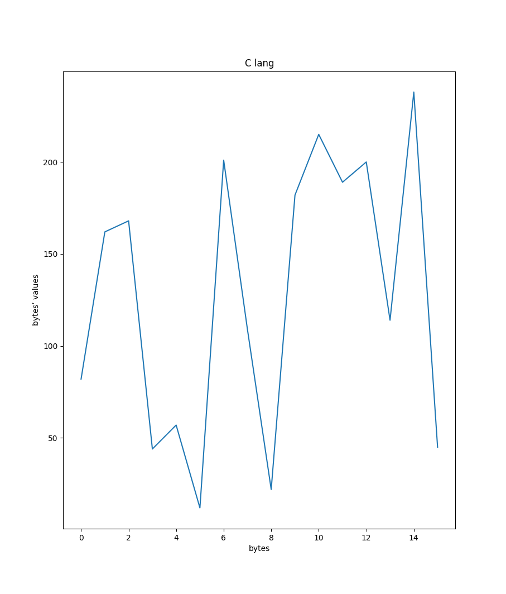 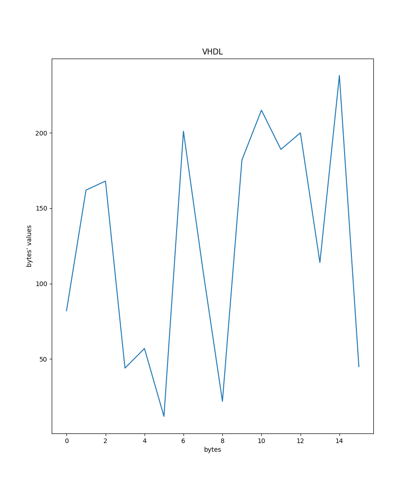
Chociaż warto zauważyć, że dla wartości początkowych nieparzystych mamy niezgodność pierwszego bajtu. Przykład dla 1:
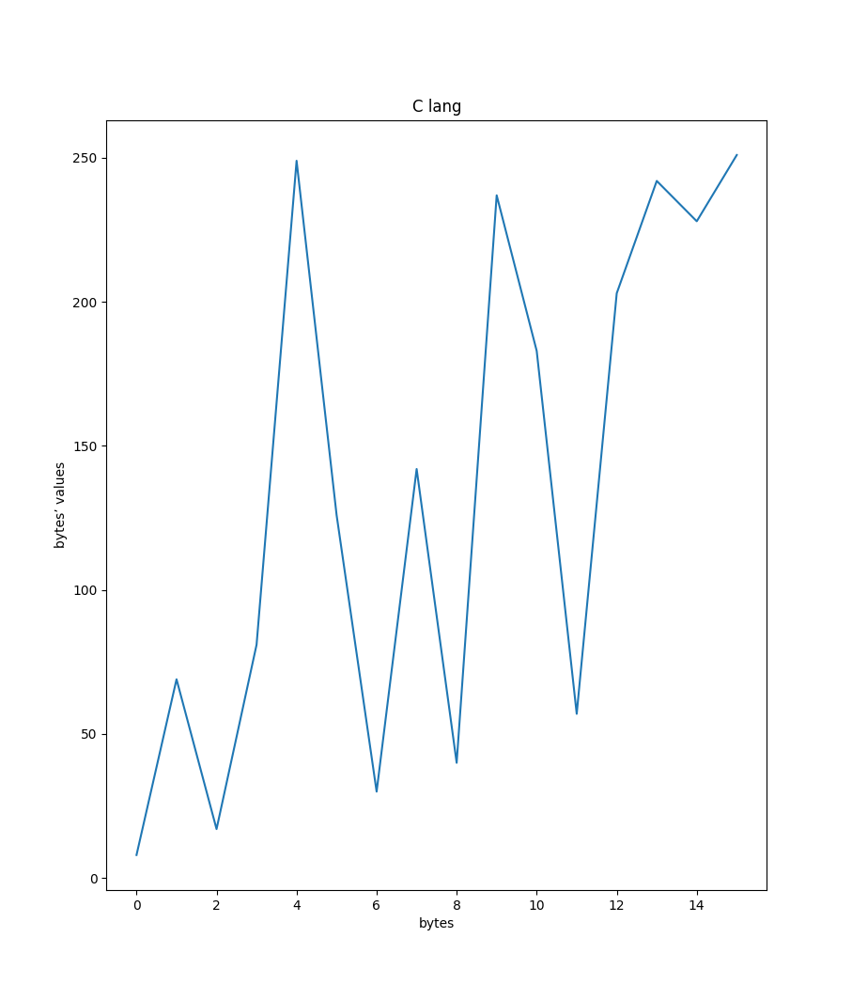 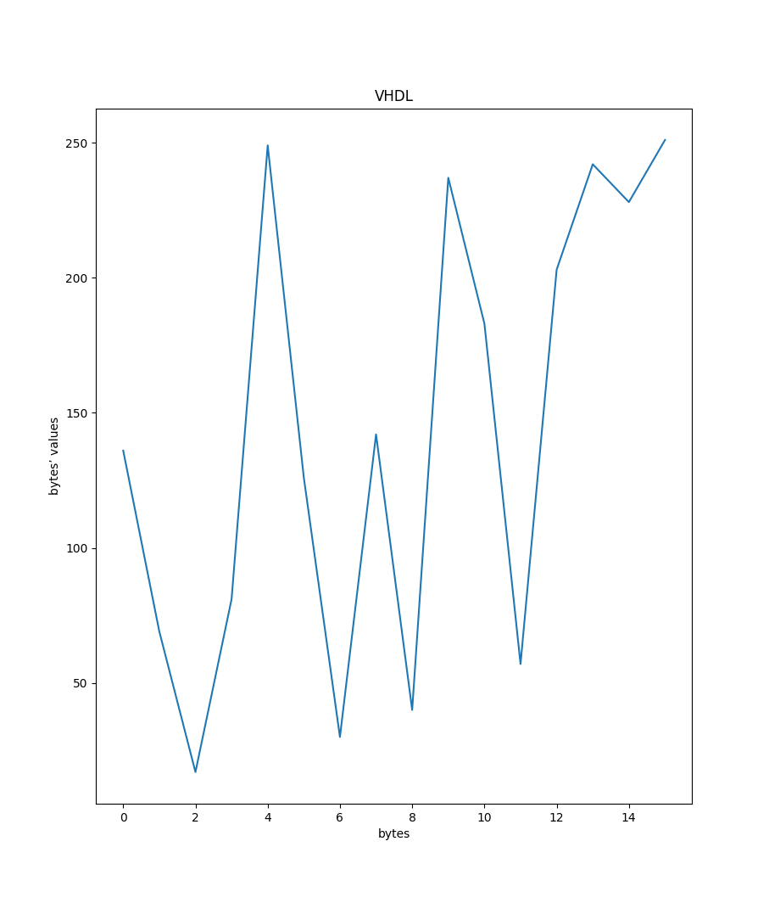
Jeśli przywrócimy program lfsr.vhd do jego pierwotnej wersji, otrzymamy następujące wyniki:
Dla 0:
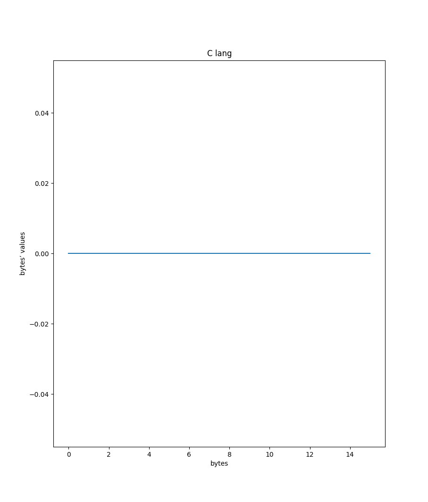 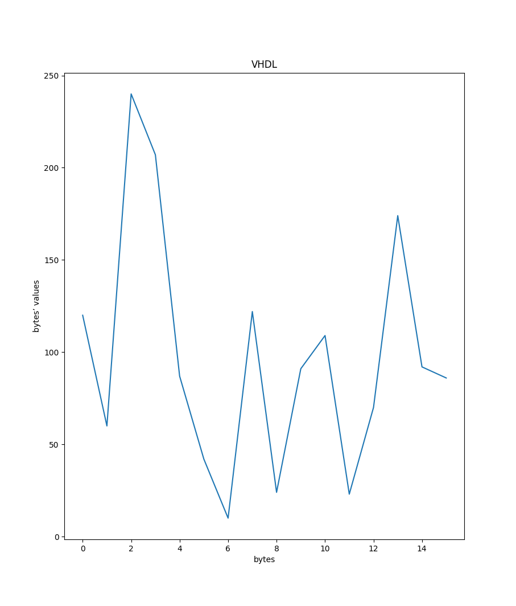
Dla 1:
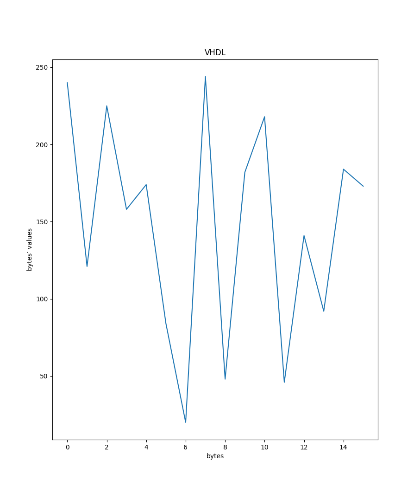
Dla 10:
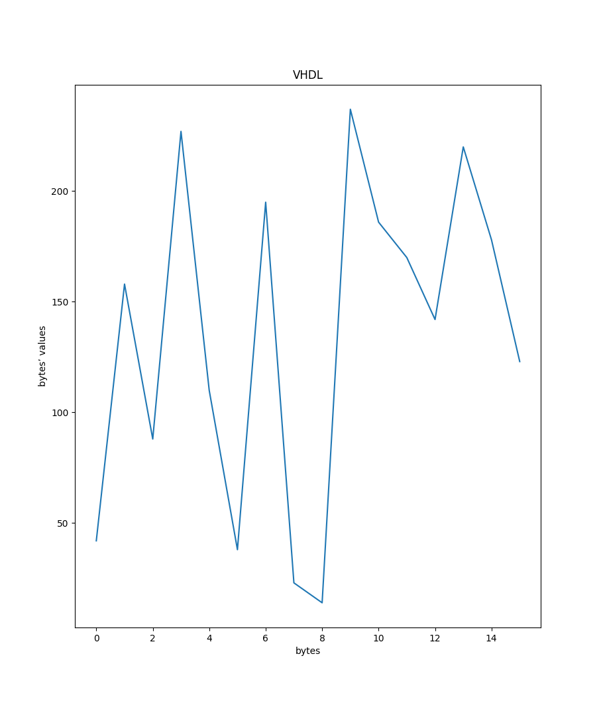
Powyższe rysunki zostały stworzone przy pomocy skryptu graph.py w następujący sposób:
make lfsr-c.o && ./main.o 16 | ./graph.py 'C lang'oraz
make build && ghdl -r lfsr_tb -gquantity=16 | ./graph.py 'VHDL'przy różnych wartościach początkowych.
Testbench do programu lfsr znajduje się w pliku lfsr_tb.vhd